lorenz_partial_additive_mse_uniform_p30_obsnoise005__ndelays_sweepProject: Lorenz_INDpartial_NDsweep_D1_NormTrue__JacobianODE
Launched: 2026-04-19T22:26:23Z
Completed: 2026-04-20T06:00:21Z
Outcome: complete_clean
Git: latent-JacobianODE @ 477d6a0
Expected runs: 10
lorenz_partial_additive_mse_uniform_p30_obsnoise005__ndelays_sweepDescription
Lorenz partial additive coupling, uniform reconstruction loss, obs_noise=0.05, prediction_steps=30, loop_closure_weight=0. Sweeps delay_embedding_params.n_delays over [5, 10, 15, 20, 25, 30, 35, 40, 45, 50]. n_target_dims fixed at 3; encoder.n_input is auto-resolved from n_delays × |observed_indices| at Hydra runtime.
Hypothesis
The obs y7938e7x post-mortem suggested the 25-delay embedding may be sub-optimal at obs_noise=0.05 (overestimated |λ_min|). Larger n_delays effectively lower-passes more noise out of any single delay coordinate (each delay is one noisy point); smaller n_delays keeps the embedding tight but can't unfold the attractor cleanly. Expect the best n_delays at obs_noise=0.05 to be larger than at obs_noise=0.01.
Success criteria
Swept axes (2): data.train_test_params.delay_embedding_params.n_delays, model.encoder.n_input
Chosen run (by best_traj_loss): 16s8uli1 — traj_loss=0.00576, MASE=0.7755, R²=0.9846, LC loss=1.109, epoch=177.0
Swept-axis values at chosen run: data.train_test_params.delay_embedding_params.n_delays=50 · model.encoder.n_input=50
Runs analyzed: 10 (expected 10)
| run_idx | run_id | data.train_test_params.delay_embedding_params.n_delays |
model.encoder.n_input |
best_traj_loss | best_MASE | R² | LC loss | epoch |
|---|---|---|---|---|---|---|---|---|
| 9 | 16s8uli1 |
50 | 50 | 0.00576 | 0.7755 | 0.9846 | 1.109 | 177.0 |
| 7 | sw7tq71c |
40 | 40 | 0.00591 | 0.7838 | 0.9842 | 0.575 | 103.0 |
| 8 | 3oodwc3a |
45 | 45 | 0.00698 | 0.8305 | 0.9805 | 3.019 | 40.0 |
| 6 | 4fzvocqs |
35 | 35 | 0.00947 | 0.8800 | 0.9750 | 6.006 | 109.0 |
| 4 | rnsg3d7o |
25 | 25 | 0.00970 | 0.9074 | 0.9742 | 1.343 | 94.0 |
| 3 | iw0d7gcy |
20 | 20 | 0.01016 | 0.9165 | 0.9723 | 0.356 | 116.0 |
| 2 | vqt1l45r |
15 | 15 | 0.02415 | 1.2308 | 0.9362 | 0.190 | 12.0 |
| 1 | zc95ojvj |
10 | 10 | 0.02574 | 1.3429 | 0.9317 | 0.056 | 153.0 |
| 0 | g0jmo6np |
5 | 5 | 0.04770 | 2.0318 | 0.8742 | 0.839 | 156.0 |
| 5 | qxpj8xpn |
30 | 30 | 1.09957 | 11.9960 | -1.9394 | 1.061 | — |
| Criterion | Verdict | Note |
|---|---|---|
| Clear minimum in best val traj_loss as a function of n_delays | Unknown | |
| Best n_delays at obs_noise=0.05 ≥ best n_delays at obs_noise=0.01 | Unknown | |
| All runs converge (no training divergence regardless of n_delays) | Unknown |
Automated verdicts use simple numeric-threshold parsing and may mis-classify qualitative criteria. The Discussion section below takes precedence.
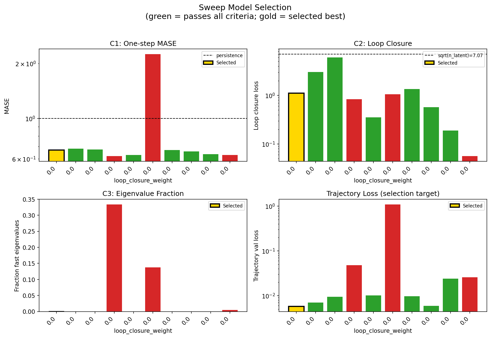
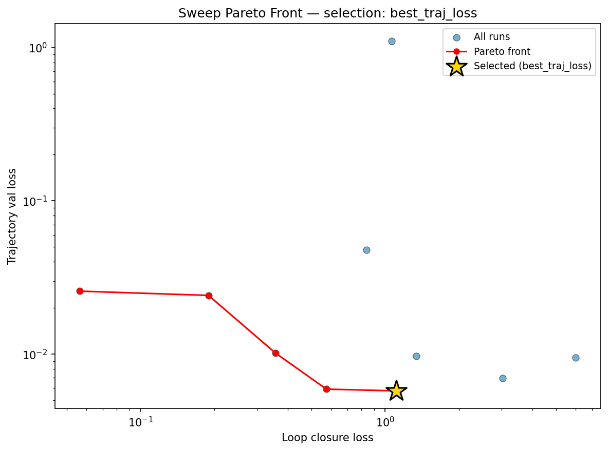
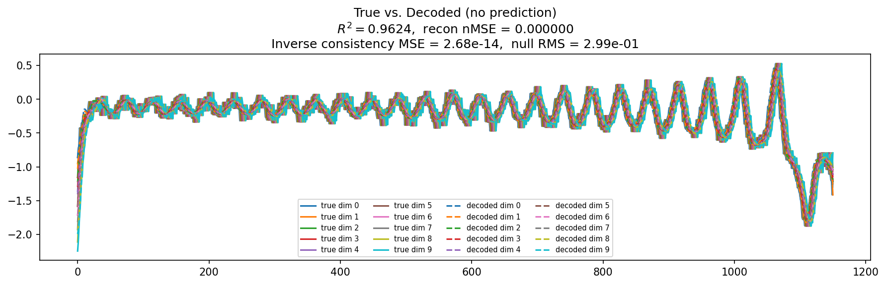
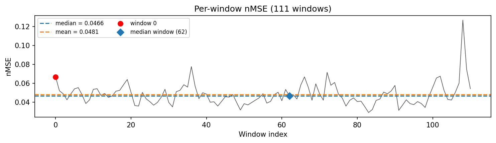
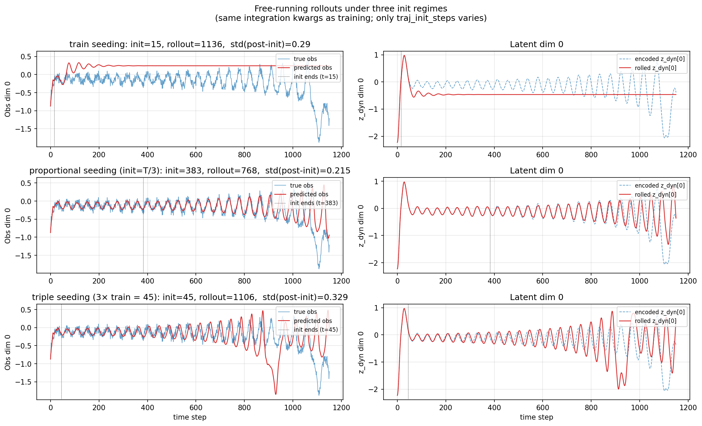
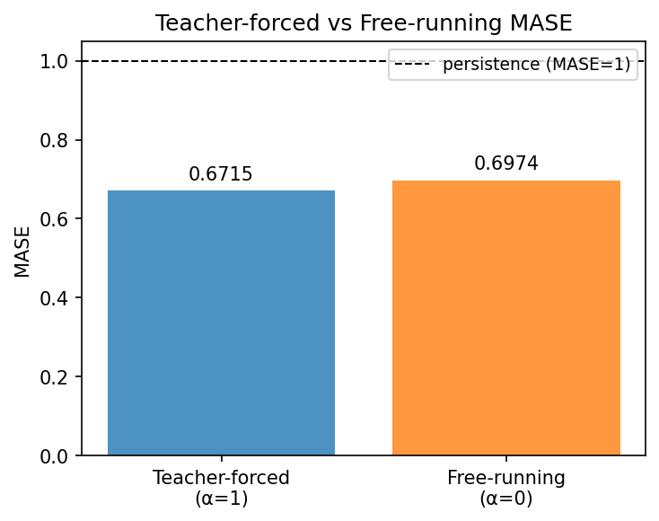
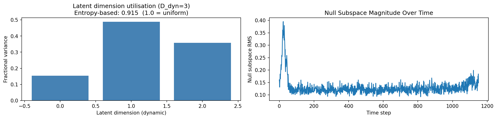
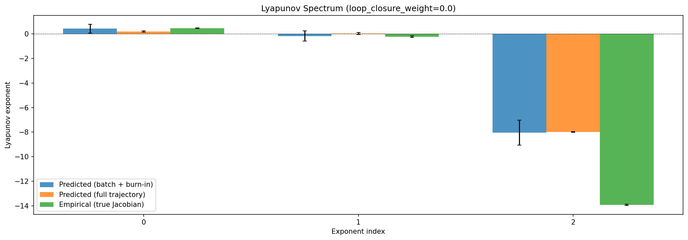
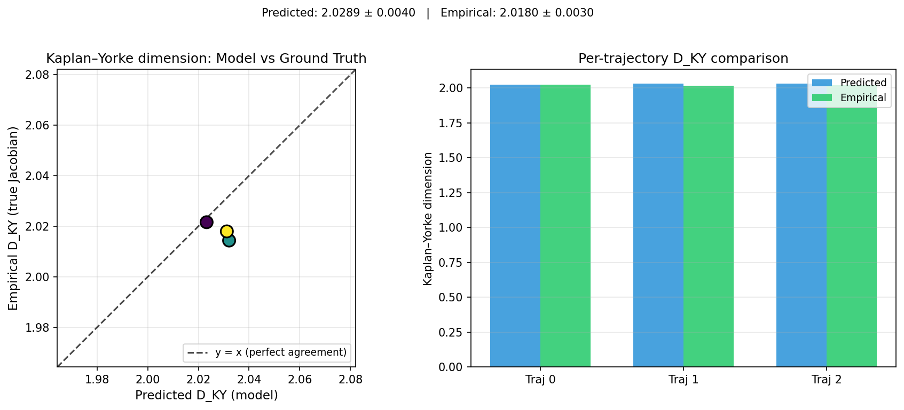
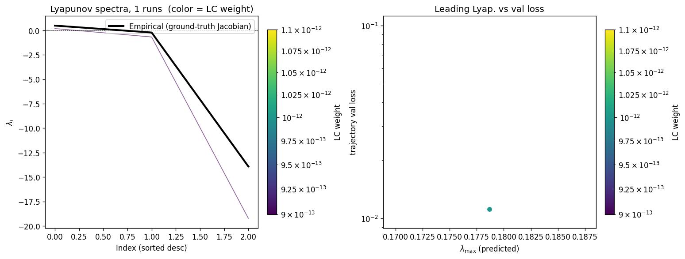
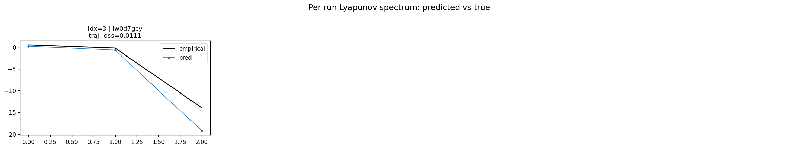
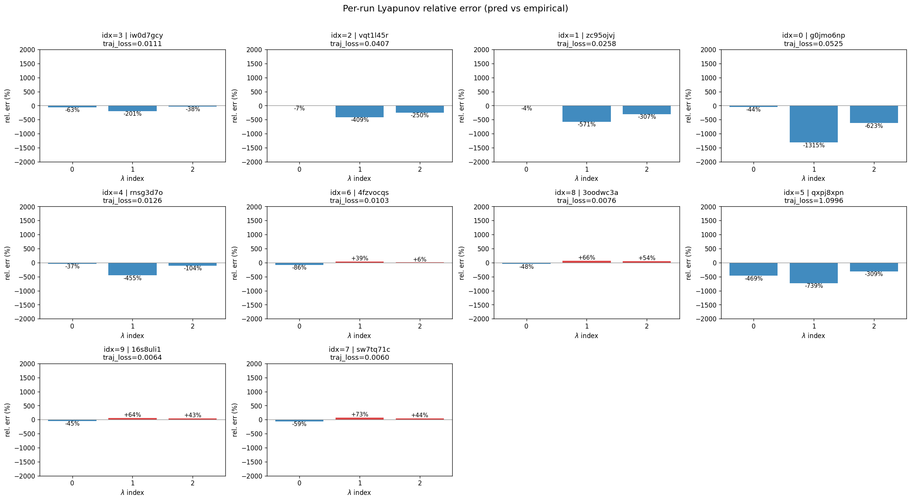
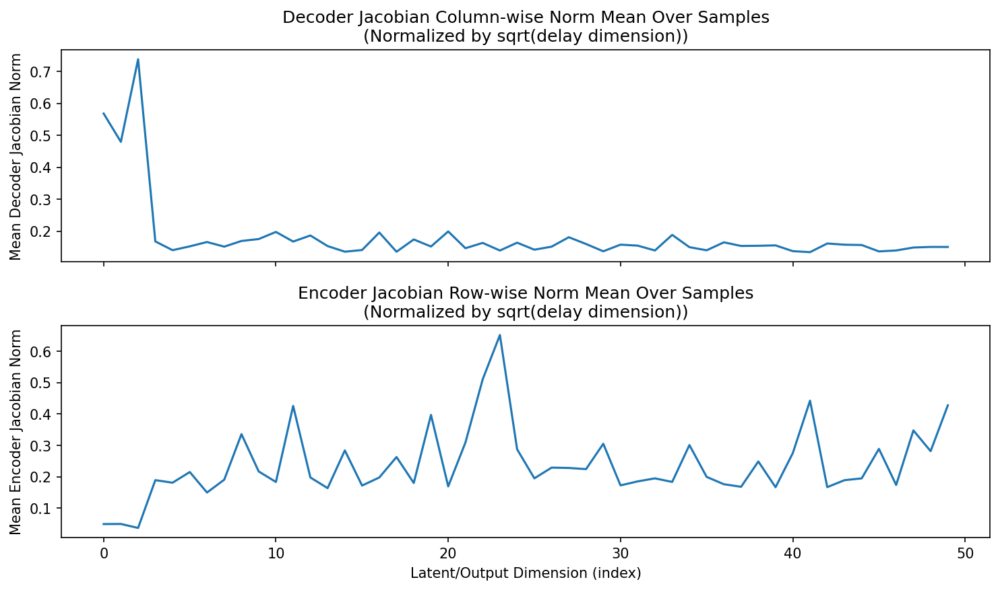
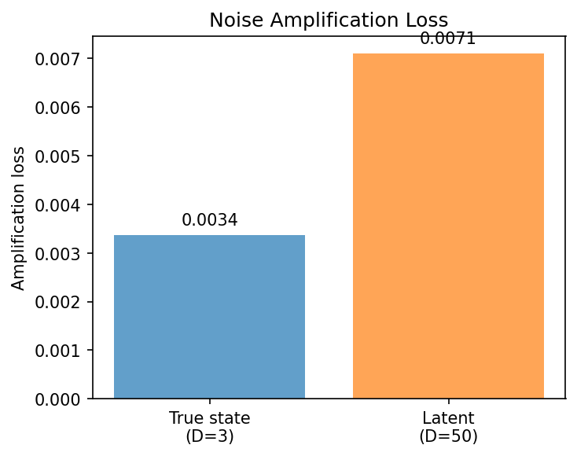
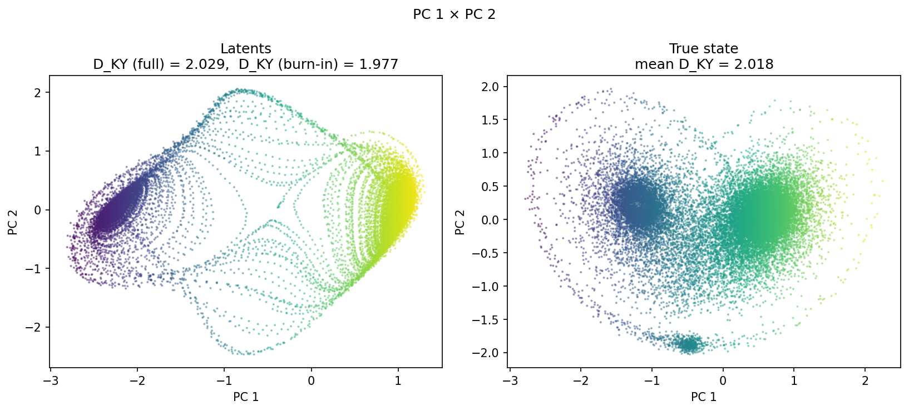
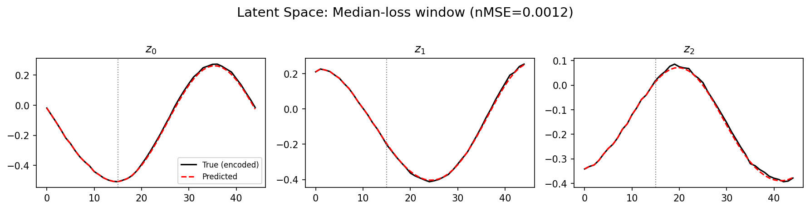
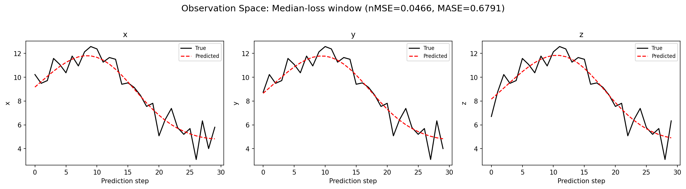
(to be written)
run_analytics stdoutrun_analyticsNo run_id provided — selecting best run from group 'lorenz_partial_additive_mse_uniform_p30_obsnoise005__ndelays_sweep' ...
Found 10 total runs in JacobianODE/Lorenz_INDpartial_NDsweep_D1_NormTrue__JacobianODE (group=lorenz_partial_additive_mse_uniform_p30_obsnoise005__ndelays_sweep)
All runs (state, loop_closure_weight, tangent_entropy_weight, kl_dyn_weight):
iw0d7gcy: state=finished, lc=0.0, te=0.0, kl_dyn=0.0
vqt1l45r: state=finished, lc=0.0, te=0.0, kl_dyn=0.0
zc95ojvj: state=finished, lc=0.0, te=0.0, kl_dyn=0.0
g0jmo6np: state=finished, lc=0.0, te=0.0, kl_dyn=0.0
rnsg3d7o: state=finished, lc=0.0, te=0.0, kl_dyn=0.0
4fzvocqs: state=finished, lc=0.0, te=0.0, kl_dyn=0.0
3oodwc3a: state=finished, lc=0.0, te=0.0, kl_dyn=0.0
qxpj8xpn: state=finished, lc=0.0, te=0.0, kl_dyn=0.0
16s8uli1: state=finished, lc=0.0, te=0.0, kl_dyn=0.0
sw7tq71c: state=finished, lc=0.0, te=0.0, kl_dyn=0.0
slurm_timeout_min not found in any run config — falling back to 180 min
Including iw0d7gcy (lc=0.0): use_all_runs=True (state=finished)
Including vqt1l45r (lc=0.0): use_all_runs=True (state=finished)
Including zc95ojvj (lc=0.0): use_all_runs=True (state=finished)
Including g0jmo6np (lc=0.0): use_all_runs=True (state=finished)
Including rnsg3d7o (lc=0.0): use_all_runs=True (state=finished)
Including 4fzvocqs (lc=0.0): use_all_runs=True (state=finished)
Including 3oodwc3a (lc=0.0): use_all_runs=True (state=finished)
Including qxpj8xpn (lc=0.0): use_all_runs=True (state=finished)
Including 16s8uli1 (lc=0.0): use_all_runs=True (state=finished)
Including sw7tq71c (lc=0.0): use_all_runs=True (state=finished)
Found 10 effectively-done sweep runs:
loop_closure_weight=0.0, tangent_entropy_weight=0.0, kl_dyn_weight=0.0 -> run_id=16s8uli1
loop_closure_weight=0.0, tangent_entropy_weight=0.0, kl_dyn_weight=0.0 -> run_id=3oodwc3a
loop_closure_weight=0.0, tangent_entropy_weight=0.0, kl_dyn_weight=0.0 -> run_id=4fzvocqs
loop_closure_weight=0.0, tangent_entropy_weight=0.0, kl_dyn_weight=0.0 -> run_id=g0jmo6np
loop_closure_weight=0.0, tangent_entropy_weight=0.0, kl_dyn_weight=0.0 -> run_id=iw0d7gcy
loop_closure_weight=0.0, tangent_entropy_weight=0.0, kl_dyn_weight=0.0 -> run_id=qxpj8xpn
loop_closure_weight=0.0, tangent_entropy_weight=0.0, kl_dyn_weight=0.0 -> run_id=rnsg3d7o
loop_closure_weight=0.0, tangent_entropy_weight=0.0, kl_dyn_weight=0.0 -> run_id=sw7tq71c
loop_closure_weight=0.0, tangent_entropy_weight=0.0, kl_dyn_weight=0.0 -> run_id=vqt1l45r
loop_closure_weight=0.0, tangent_entropy_weight=0.0, kl_dyn_weight=0.0 -> run_id=zc95ojvj
n_dims=50, n_latent=50, n_dyn=3, dt=0.0150
run=16s8uli1: DiagnosticMetrics(one_step_mase=0.6690319180488586, loop_closure_loss=1.109110713005066, fast_eigenvalue_fraction=0.0, trajectory_val_loss=0.0057553634978830814) (from cache, n_batches=100)
run=3oodwc3a: DiagnosticMetrics(one_step_mase=0.6827640533447266, loop_closure_loss=3.018904447555542, fast_eigenvalue_fraction=0.0, trajectory_val_loss=0.006982374936342239) (from cache, n_batches=100)
run=4fzvocqs: DiagnosticMetrics(one_step_mase=0.6758391261100769, loop_closure_loss=6.006000518798828, fast_eigenvalue_fraction=0.0, trajectory_val_loss=0.009467532858252525) (from cache, n_batches=100)
run=g0jmo6np: DiagnosticMetrics(one_step_mase=0.6205236911773682, loop_closure_loss=0.8387559652328491, fast_eigenvalue_fraction=0.3333333432674408, trajectory_val_loss=0.0477001890540123) (from cache, n_batches=100)
run=iw0d7gcy: DiagnosticMetrics(one_step_mase=0.6295002698898315, loop_closure_loss=0.35624420642852783, fast_eigenvalue_fraction=0.0, trajectory_val_loss=0.010159987956285477) (from cache, n_batches=100)
run=qxpj8xpn: DiagnosticMetrics(one_step_mase=2.2484309673309326, loop_closure_loss=1.061212420463562, fast_eigenvalue_fraction=0.13750000298023224, trajectory_val_loss=1.0995689630508423) (from cache, n_batches=100)
run=rnsg3d7o: DiagnosticMetrics(one_step_mase=0.6702324748039246, loop_closure_loss=1.3428367376327515, fast_eigenvalue_fraction=0.0, trajectory_val_loss=0.009704153053462505) (from cache, n_batches=100)
run=sw7tq71c: DiagnosticMetrics(one_step_mase=0.6575711369514465, loop_closure_loss=0.5754083395004272, fast_eigenvalue_fraction=0.0, trajectory_val_loss=0.005907409358769655) (from cache, n_batches=100)
run=vqt1l45r: DiagnosticMetrics(one_step_mase=0.6356289386749268, loop_closure_loss=0.18966253101825714, fast_eigenvalue_fraction=0.0, trajectory_val_loss=0.024153903126716614) (from cache, n_batches=100)
run=zc95ojvj: DiagnosticMetrics(one_step_mase=0.6290665864944458, loop_closure_loss=0.056427132338285446, fast_eigenvalue_fraction=0.004999999888241291, trajectory_val_loss=0.025739939883351326) (from cache, n_batches=100)
Ranking method: best_traj_loss
Best run ID: 16s8uli1
Best loop_closure_weight: 0.0
Best tangent_entropy_weight: 0.0
Best kl_dyn_weight: 0.0
Best traj loss: 0.005755
Criteria applied: ['C1', 'C2', 'C3']
Surviving: 7 / 10
Auto-selected run_id: 16s8uli1
======================================================================
PARETO FRONTIER RUNS (5 runs)
======================================================================
Run ID LC Loss Traj Val Loss
------------ -------------- --------------
zc95ojvj 0.056427 0.025740
vqt1l45r 0.189663 0.024154
iw0d7gcy 0.356244 0.010160
sw7tq71c 0.575408 0.005907
16s8uli1 1.109111 0.005755 <-- selected
======================================================================
RANKING METHOD COMPARISON (over 7 survivors)
======================================================================
Method Run ID LC Loss Traj Val Loss
---------------------- ------------ -------------- --------------
best_traj_loss 16s8uli1 1.109111 0.005755 <-- active
pareto_knee sw7tq71c 0.575408 0.005907
geo_rank 16s8uli1 1.109111 0.005755
minimax_rank sw7tq71c 0.575408 0.005907
geo_log_score 16s8uli1 1.109111 0.005755
minimax_log_score sw7tq71c 0.575408 0.005907
======================================================================
Loading run 16s8uli1 from JacobianODE/Lorenz_INDpartial_NDsweep_D1_NormTrue__JacobianODE ...
Train dataset shape: torch.Size([24332, 45, 50])
Validation dataset shape: torch.Size([7742, 45, 50])
Test dataset shape: torch.Size([3318, 45, 50])
Train trajectories dataset shape: torch.Size([22, 1151, 50])
Validation trajectories dataset shape: torch.Size([7, 1151, 50])
Test trajectories dataset shape: torch.Size([3, 1151, 50])
Loading checkpoint epoch=177-step=35600.ckpt...
Computing reconstruction ...
Computing MASE ...
Teacher-forced MASE: 0.6715
Free-running MASE: 0.6974
Computing latent utilization ...
Entropy-based utilization: 0.915
Null subspace mean RMS: 1.339928e-01
Computing Lyapunov exponents ...
Computing full-trajectory Lyapunov (3 test trajs, T=1151) ...
Predicted Lyapunov exponents (batch+burn-in, 128 windowed trajs):
λ_1 = +0.4261 ± 0.3584
λ_2 = -0.1643 ± 0.4247
λ_3 = -8.0417 ± 1.0189
Predicted Lyapunov exponents (full-length, 3 test trajs):
λ_1 = +0.2022 ± 0.0573
λ_2 = +0.0285 ± 0.0762
λ_3 = -7.9933 ± 0.0260
Empirical Lyapunov exponents (mean ± std):
λ_1 = +0.4677 ± 0.0259
λ_2 = -0.2173 ± 0.0549
λ_3 = -13.9174 ± 0.0513
Mean KY dim (predicted): 2.029 ± 0.004
Mean KY dim (empirical): 2.018 ± 0.003
Mean KY dim (burn-in): 1.977 ± 0.233
Computing prediction windows ...
Windows: 111 — nMSE min=0.0291, median=0.0466, mean=0.0481, max=0.1267
Computing long-trajectory free-running rollouts ...
Computing encoder/decoder Jacobians ...
encoder_jacobian: (128, 50, 50)
decoder_jacobian: (128, 50, 50)
Computing amplification loss ...
Amplification loss — True state: 0.003375
Amplification loss — Latent: 0.007112